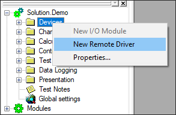
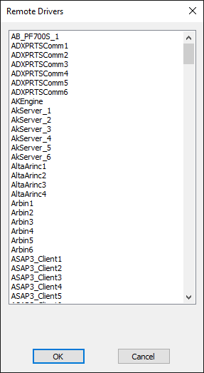
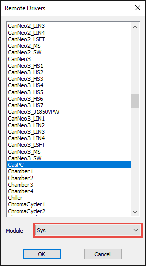
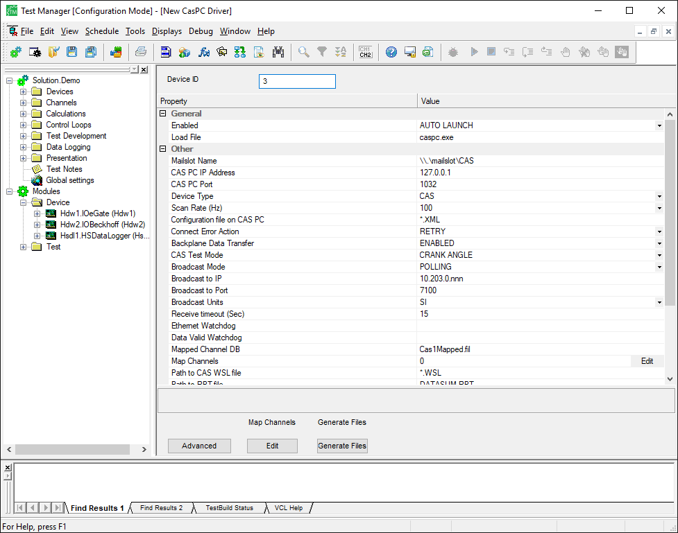
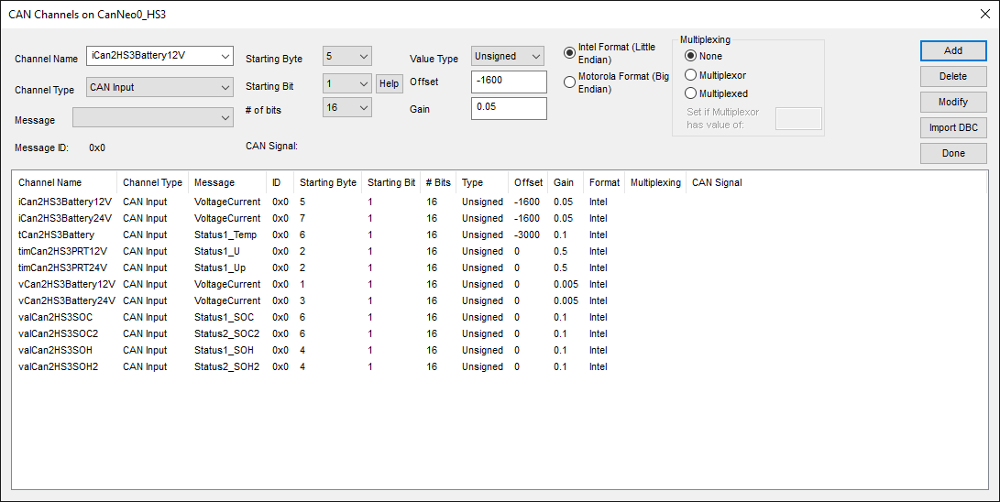
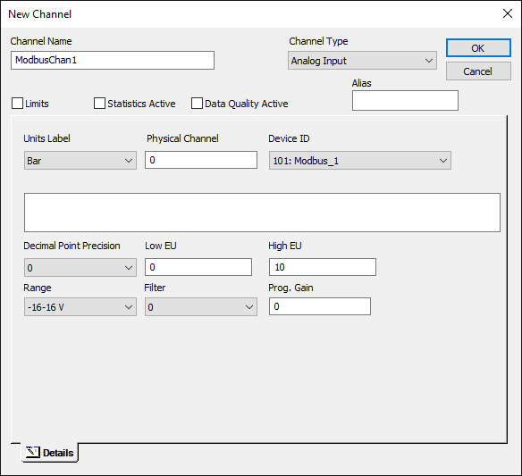
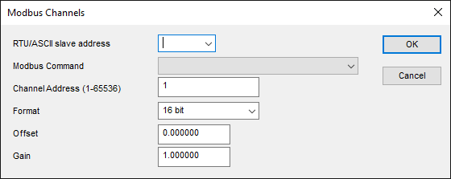

iTest User's Guide
A&D Technology offers a variety of drivers that support different protocols and device types. These drivers allow A&D-specific or third-party devices and systems to be integrated into iTest. iTest uses a common method for labeling data from devices so that data can be utilized consistently across many different devices. Each device connected to iTest is managed by a driver and device data is stored in the RDB as a channel name. This document describes how to activate, configure, and add channels to a driver. For more information on your specific drivers, navigate to the $SYSTEMDIR\Help\Drivers folder to access individual driver documents.
If your driver was included in an iTest module, it's possible some of the details described here are not necessary. The module developer will have already taken care of configuring the driver and adding channels in the supplied module.
All A&D Technology iTest drivers are automatically installed during installation. However, in order to use a specific driver, you must have the proper USB hardware dongle.
You can add drivers to your solution in Test Manager. To add a new driver, locate the Devices folder in the tree bar and right-click to select New Remote Driver. The following dialog displays, which enables you to select a driver to add to your solution.
New Remote Drivers

Drivers List

Select the driver you want to add. By default, the driver belongs to the solution, but if you intend for the driver to belong to a module, select a driver to display the module drop-down list and then select a module. If you select a module, the driver belongs to that module. This means if the module is deleted, the driver will be deleted, and if the module is exported, the driver information will be exported with it.
Module Option

After adding the driver, the configuration screen loads in Test Manager. The driver configuration screens are similar for all drivers, but each driver contains fields that are specific to the driver. For example, baud rate, IP address, port numbers, scan rates, and channel mapping information are all common configuration items for many drivers. For information on the specific fields for your driver, consult your driver document. The image below shoes the CasPC driver configuration screen. This driver allows you to communicate with an A&D Phoenix Combustion Analysis system.
Test Manager Driver Configuration Screen (tdaddin)

Each driver configuration screen contains some common information. This table lists common fields for all drivers.
Common Driver Settings
| Name | Description |
| Device ID | A unique integer number greater than zero. All drivers must have a unique device id in an iTest Solution. Device ID 0 is not used. |
| Enabled | This setting determines how the driver is started: Enabled: The driver does not start automatically, but it can be launched later using mailslot messages, VCL, or powertek.ini entry Autolaunch: The driver starts automatically when iTest is launched. Disabled: The driver is not used. |
| Load File | The name of the executable for this driver. |
After adding a driver to your solution, you will need to add some channels to iTest that will allow you to read and write data from the driver into iTest. This step varies from driver to driver. Many of the driver configuration screens in Test Manager (also called tdaddins), have a button for creating channels for that driver. For example, the CANNeo driver has a Signals Edit button. When you click this button, a dialog displays that will let you define the raw CAN signals to read from the Bus and store in an iTest Channel. These signals can be defined manually or by reading in a .dbc file. This dialog is show below:
CAN Dialog

This dialog will create iTest channels, which have the same name as the channels in the .dbc file by default. It will automatically add them to a specified channel definition file.
Other drivers do not have mapping dialogs available on the module configuration screen. For these drivers, the channels are assigned to the driver directly. To do this, you would create a channel in the channel definition editor, then edit the channel to assign the channel to the driver. This is shown on the dialog below as an analog input channel is assigned to the Modbus driver with device ID 101.
New Channel Dialog

Once you have assigned a channel to a driver using this direct method, you will need to provide some information about the channel that will enable the driver to decide how to read or write that channel to the device. To do this, double-click the channel name to open the Edit Channel dialog and click the Device Options button. The following dialog, which is specific to Modbus type channels, displays.
Modbus Channels Dialog

The purpose of the dialog is to add information to an RDB field called Device Options. This is the field in the RDB that is most often used by drivers to define how to address data on the devices they are designed to interface to. The Device Options field is a 128 byte text field. Its format varies widely between drivers. Many drivers write to this field automatically when you use the mapping editors that they provide in the driver configuration editors.
Many iTest drivers require a USB dongle or a license server to run. A&D provides a utility called DongleUtil.exe that can be used to examine the licenses available on your machine. See the DongleUtil document for more information.